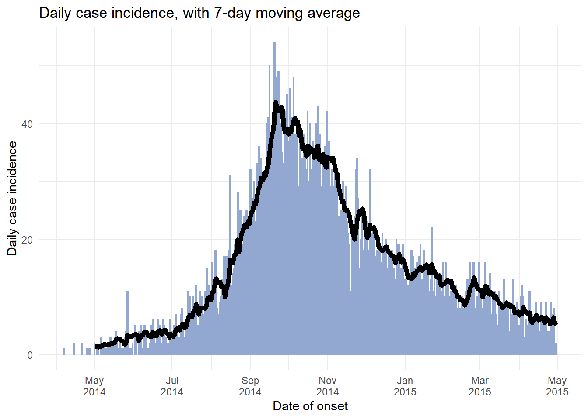
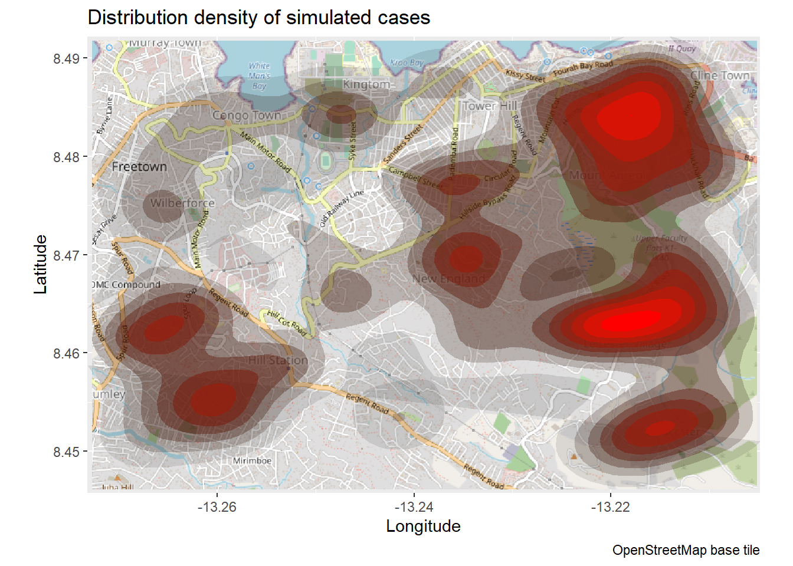

19 Heatmaps & density plots
19.1 Overview
Heatmaps can be useful when tracking reporting metrics across many facilities/jurisdictions over time
For example, the image below shows % of weekdays that data was received from each facility, week-by-week:
## `summarise()` has grouped output by 'location_name'. You can override using the `.groups` argument.## Joining, by = c("location_name", "week")## Warning in showSRID(uprojargs, format = "PROJ", multiline = "NO", prefer_proj = prefer_proj): Discarded ellps WGS 84 in CRS definition:
## +proj=merc +a=6378137 +b=6378137 +lat_ts=0 +lon_0=0 +x_0=0 +y_0=0 +k=1 +units=m +nadgrids=@null +wktext +no_defs +type=crs## Warning in showSRID(uprojargs, format = "PROJ", multiline = "NO", prefer_proj = prefer_proj): Discarded datum World Geodetic System 1984
## in CRS definition## Warning in showSRID(uprojargs, format = "PROJ", multiline = "NO", prefer_proj = prefer_proj): Discarded ellps WGS 84 in CRS definition:
## +proj=merc +a=6378137 +b=6378137 +lat_ts=0 +lon_0=0 +x_0=0 +y_0=0 +k=1 +units=m +nadgrids=@null +wktext +no_defs +type=crs## Warning in showSRID(uprojargs, format = "PROJ", multiline = "NO", prefer_proj = prefer_proj): Discarded datum World Geodetic System 1984
## in CRS definition## Warning in showSRID(uprojargs, format = "PROJ", multiline = "NO", prefer_proj = prefer_proj): Discarded ellps WGS 84 in CRS definition:
## +proj=merc +a=6378137 +b=6378137 +lat_ts=0 +lon_0=0 +x_0=0 +y_0=0 +k=1 +units=m +nadgrids=@null +wktext +no_defs +type=crs## Warning in showSRID(uprojargs, format = "PROJ", multiline = "NO", prefer_proj = prefer_proj): Discarded datum World Geodetic System 1984
## in CRS definition## Warning in showSRID(uprojargs, format = "PROJ", multiline = "NO", prefer_proj = prefer_proj): Discarded ellps WGS 84 in CRS definition:
## +proj=merc +a=6378137 +b=6378137 +lat_ts=0 +lon_0=0 +x_0=0 +y_0=0 +k=1 +units=m +nadgrids=@null +wktext +no_defs +type=crs## Warning in showSRID(uprojargs, format = "PROJ", multiline = "NO", prefer_proj = prefer_proj): Discarded datum World Geodetic System 1984
## in CRS definition## Warning in showSRID(uprojargs, format = "PROJ", multiline = "NO", prefer_proj = prefer_proj): Discarded ellps WGS 84 in CRS definition:
## +proj=merc +a=6378137 +b=6378137 +lat_ts=0 +lon_0=0 +x_0=0 +y_0=0 +k=1 +units=m +nadgrids=@null +wktext +no_defs +type=crs## Warning in showSRID(uprojargs, format = "PROJ", multiline = "NO", prefer_proj = prefer_proj): Discarded datum World Geodetic System 1984
## in CRS definition## Warning in showSRID(uprojargs, format = "PROJ", multiline = "NO", prefer_proj = prefer_proj): Discarded ellps WGS 84 in CRS definition:
## +proj=merc +a=6378137 +b=6378137 +lat_ts=0 +lon_0=0 +x_0=0 +y_0=0 +k=1 +units=m +nadgrids=@null +wktext +no_defs +type=crs## Warning in showSRID(uprojargs, format = "PROJ", multiline = "NO", prefer_proj = prefer_proj): Discarded datum World Geodetic System 1984
## in CRS definition## Warning in showSRID(uprojargs, format = "PROJ", multiline = "NO", prefer_proj = prefer_proj): Discarded ellps WGS 84 in CRS definition:
## +proj=merc +a=6378137 +b=6378137 +lat_ts=0 +lon_0=0 +x_0=0 +y_0=0 +k=1 +units=m +nadgrids=@null +wktext +no_defs +type=crs## Warning in showSRID(uprojargs, format = "PROJ", multiline = "NO", prefer_proj = prefer_proj): Discarded datum World Geodetic System 1984
## in CRS definition## Warning in showSRID(uprojargs, format = "PROJ", multiline = "NO", prefer_proj = prefer_proj): Discarded ellps WGS 84 in CRS definition:
## +proj=merc +a=6378137 +b=6378137 +lat_ts=0 +lon_0=0 +x_0=0 +y_0=0 +k=1 +units=m +nadgrids=@null +wktext +no_defs +type=crs## Warning in showSRID(uprojargs, format = "PROJ", multiline = "NO", prefer_proj = prefer_proj): Discarded datum World Geodetic System 1984
## in CRS definition## Warning in showSRID(uprojargs, format = "PROJ", multiline = "NO", prefer_proj = prefer_proj): Discarded ellps WGS 84 in CRS definition:
## +proj=merc +a=6378137 +b=6378137 +lat_ts=0 +lon_0=0 +x_0=0 +y_0=0 +k=1 +units=m +nadgrids=@null +wktext +no_defs +type=crs## Warning in showSRID(uprojargs, format = "PROJ", multiline = "NO", prefer_proj = prefer_proj): Discarded datum World Geodetic System 1984
## in CRS definition## Warning in showSRID(uprojargs, format = "PROJ", multiline = "NO", prefer_proj = prefer_proj): Discarded ellps WGS 84 in CRS definition:
## +proj=merc +a=6378137 +b=6378137 +lat_ts=0 +lon_0=0 +x_0=0 +y_0=0 +k=1 +units=m +nadgrids=@null +wktext +no_defs +type=crs## Warning in showSRID(uprojargs, format = "PROJ", multiline = "NO", prefer_proj = prefer_proj): Discarded datum World Geodetic System 1984
## in CRS definition## Warning in showSRID(uprojargs, format = "PROJ", multiline = "NO", prefer_proj = prefer_proj): Discarded ellps WGS 84 in CRS definition:
## +proj=merc +a=6378137 +b=6378137 +lat_ts=0 +lon_0=0 +x_0=0 +y_0=0 +k=1 +units=m +nadgrids=@null +wktext +no_defs +type=crs## Warning in showSRID(uprojargs, format = "PROJ", multiline = "NO", prefer_proj = prefer_proj): Discarded datum World Geodetic System 1984
## in CRS definition## Warning in showSRID(uprojargs, format = "PROJ", multiline = "NO", prefer_proj = prefer_proj): Discarded ellps WGS 84 in CRS definition:
## +proj=merc +a=6378137 +b=6378137 +lat_ts=0 +lon_0=0 +x_0=0 +y_0=0 +k=1 +units=m +nadgrids=@null +wktext +no_defs +type=crs## Warning in showSRID(uprojargs, format = "PROJ", multiline = "NO", prefer_proj = prefer_proj): Discarded datum World Geodetic System 1984
## in CRS definition## Warning in showSRID(uprojargs, format = "PROJ", multiline = "NO", prefer_proj = prefer_proj): Discarded ellps WGS 84 in CRS definition:
## +proj=merc +a=6378137 +b=6378137 +lat_ts=0 +lon_0=0 +x_0=0 +y_0=0 +k=1 +units=m +nadgrids=@null +wktext +no_defs +type=crs## Warning in showSRID(uprojargs, format = "PROJ", multiline = "NO", prefer_proj = prefer_proj): Discarded datum World Geodetic System 1984
## in CRS definition## Warning in showSRID(uprojargs, format = "PROJ", multiline = "NO", prefer_proj = prefer_proj): Discarded ellps WGS 84 in CRS definition:
## +proj=merc +a=6378137 +b=6378137 +lat_ts=0 +lon_0=0 +x_0=0 +y_0=0 +k=1 +units=m +nadgrids=@null +wktext +no_defs +type=crs## Warning in showSRID(uprojargs, format = "PROJ", multiline = "NO", prefer_proj = prefer_proj): Discarded datum World Geodetic System 1984
## in CRS definition## Warning in showSRID(uprojargs, format = "PROJ", multiline = "NO", prefer_proj = prefer_proj): Discarded ellps WGS 84 in CRS definition:
## +proj=merc +a=6378137 +b=6378137 +lat_ts=0 +lon_0=0 +x_0=0 +y_0=0 +k=1 +units=m +nadgrids=@null +wktext +no_defs +type=crs## Warning in showSRID(uprojargs, format = "PROJ", multiline = "NO", prefer_proj = prefer_proj): Discarded datum World Geodetic System 1984
## in CRS definition## Warning in showSRID(uprojargs, format = "PROJ", multiline = "NO", prefer_proj = prefer_proj): Discarded ellps WGS 84 in CRS definition:
## +proj=merc +a=6378137 +b=6378137 +lat_ts=0 +lon_0=0 +x_0=0 +y_0=0 +k=1 +units=m +nadgrids=@null +wktext +no_defs +type=crs## Warning in showSRID(uprojargs, format = "PROJ", multiline = "NO", prefer_proj = prefer_proj): Discarded datum World Geodetic System 1984
## in CRS definition## Warning in showSRID(uprojargs, format = "PROJ", multiline = "NO", prefer_proj = prefer_proj): Discarded ellps WGS 84 in CRS definition:
## +proj=merc +a=6378137 +b=6378137 +lat_ts=0 +lon_0=0 +x_0=0 +y_0=0 +k=1 +units=m +nadgrids=@null +wktext +no_defs +type=crs## Warning in showSRID(uprojargs, format = "PROJ", multiline = "NO", prefer_proj = prefer_proj): Discarded datum World Geodetic System 1984
## in CRS definition
19.2 Preparation
pacman::p_load(OpenStreetMap,
aweek)19.3 Reporting metrics over time
Reporting metrics over time
Often in public health, an objective is to assess trends over time for many entities (facilities, jurisdictions, etc.). One way to visualize trends over time from many entities is a heatmap where the x-axis is time and the y-axis are the many entities.
19.3.1 Preparation
Preparation
To demonstrate this, we import this dataset of daily malaria case reports from 65 facilities.
The preparation will involve:
- Importing and reviewing the data
- Aggregating the daily data into weekly, and summarizing weekly performance
19.3.1.2 Packages
The packages we will use are:
pacman::p_load(tidyverse, # ggplot and data manipulation
rio, # importing data
aweek) # manage weeks19.3.1.3 Aggregate and summarize
The objective is to transform the daily reports (seen in previous tab) into weekly reports with a summary of performance - in this case the proportion of days per week that the facility reported any data for Spring District from April-May 2019.
To achieve this:
- Filter the data as appropriate (by place, date)
- Create a week column using
date2week()from package aweek- This function transforms dates to weeks, using a specified start date of each week (e.g. “Monday”)
- The
floor_day =argument means that dates are rounded into the week only (day of the week is not shown)
- The
factor =argument converts the new column to a factor - important because all possible weeks within the date range are designated as levels, even if there is no data for them currently.
- This function transforms dates to weeks, using a specified start date of each week (e.g. “Monday”)
- The data are grouped by columns “location” and “week” to create analysis units of “facility-week”
- The verb
summarize()creates new columns to calculate reporting performance for each “facility-week”:- Number of days per week (7 - a static value)
- Number of reports received from the facility-week (could be more than 7!)
- Sum of malaria cases reported by the facility-week (just for interest)
- Number of unique days in the facility-week for which there is data reported
-
Percent of the 7 days per facility-week for which data was reported
- Number of days per week (7 - a static value)
- The dataframe is joined (
right_join()) to a comprehensive list of all possible facility-week combinations, to make the dataset complete. The matrix of all possible combinations is created by applyingexpand()to those two columns of the dataframe as it is at that moment in the pipe chain (represented by “.”). Because aright_join()is used, all rows in theexpand()dataframe are kept, and added to agg_weeks if necessary. These new rows appear withNA(missing) summarized values.
# Create weekly summary dataset
agg_weeks <- facility_count_data %>%
# filter the data as appropriate
filter(District == "Spring",
data_date < as.Date("2019-06-01")) %>%
# Create week column from data_date
mutate(week = aweek::date2week(data_date,
start_date = "Monday",
floor_day = TRUE,
factor = TRUE)) %>%
# Group into facility-weeks
group_by(location_name, week, .drop = F) %>%
# Create summary column on the grouped data
summarize(n_days = 7, # 7 days per week
n_reports = dplyr::n(), # number of reports received per week (could be >7)
malaria_tot = sum(malaria_tot, na.rm = T), # total malaria cases reported
n_days_reported = length(unique(data_date)), # number of unique days reporting per week
p_days_reported = round(100*(n_days_reported / n_days))) %>% # percent of days reporting
# Ensure every possible facility-week combination appears in the data
right_join(expand(., week, location_name)) # "." represents the dataset at that moment in the pipe chain## `summarise()` has grouped output by 'location_name'. You can override using the `.groups` argument.## Joining, by = c("location_name", "week")19.3.2 Create heatmap
Create heatmap
The ggplot() is make using geom_tile():
- Weeks on the x-axis is transformed to dates, allowing use of
scale_x_date()
- location_name on the y-axis will show all facility names
- The
fillis the performance for that facility-week (numeric)
-
scale_fill_gradient()is used on the numeric fill, specifying colors for high, low, andNA
-
scale_x_date()is used on the x-axis specifying labels every 2 weeks and their format
- Aesthetic themes and labels can be adjusted as necessary
19.3.2.1 Basic
Basic
ggplot(agg_weeks,
aes(x = aweek::week2date(week), # transformed to date class
y = location_name,
fill = p_days_reported))+
# tiles
geom_tile(colour="white")+ # white gridlines
scale_fill_gradient(low = "orange", high = "darkgreen", na.value = "grey80")+
scale_x_date(expand = c(0,0),
date_breaks = "2 weeks",
date_labels = "%d\n%b")+
# aesthetic themes
theme_minimal()+ # simplify background
theme(
legend.title = element_text(size=12, face="bold"),
legend.text = element_text(size=10, face="bold"),
legend.key.height = grid::unit(1,"cm"), # height of legend key
legend.key.width = grid::unit(0.6,"cm"), # width of legend key
axis.text.x = element_text(size=12),
axis.text.y = element_text(vjust=0.2),
axis.ticks = element_line(size=0.4),
axis.title = element_text(size=12, face="bold"),
plot.title = element_text(hjust=0,size=14,face="bold"),
plot.caption = element_text(hjust = 0, face = "italic")
)+
# plot labels
labs(x = "Week",
y = "Facility name",
fill = "Reporting\nperformance (%)", # legend title
title = "Percent of days per week that facility reported data",
subtitle = "District health facilities, April-May 2019",
caption = "7-day weeks beginning on Mondays.")
19.3.2.2 Ordered y-axis
Ordered y-axis
If you want to order the y-axis facilities by something, convert them to class Factor and provide the order. Below, the order is set based on the total number of reporting days filed by the facility across the whole timespan:
facility_order <- agg_weeks %>%
group_by(location_name) %>%
summarize(tot_reports = sum(n_days_reported, na.rm=T)) %>%
arrange(tot_reports) # ascending order
as.tibble(facility_order)## # A tibble: 15 x 2
## location_name tot_reports
## <chr> <int>
## 1 Facility 56 1
## 2 Facility 65 6
## 3 Facility 11 19
## 4 Facility 39 31
## 5 Facility 59 33
## 6 Facility 27 40
## 7 Facility 32 41
## 8 Facility 51 41
## 9 Facility 7 42
## 10 Facility 1 46
## 11 Facility 9 48
## 12 Facility 35 50
## 13 Facility 50 51
## 14 Facility 58 53
## 15 Facility 28 75Now use the above vector (facility_order$location_name) to be the order of the factor levels of location_name in the dataset agg_weeks:
agg_weeks <- agg_weeks %>%
mutate(location_name = factor(location_name, levels = facility_order$location_name))And now the data are re-plotted, with location_name being an ordered factor:
ggplot(agg_weeks,
aes(x = aweek::week2date(week), # transformed to date class
y = location_name,
fill = p_days_reported))+
# tiles
geom_tile(colour="white")+ # white gridlines
scale_fill_gradient(low = "orange", high = "darkgreen", na.value = "grey80")+
scale_x_date(expand = c(0,0),
date_breaks = "2 weeks",
date_labels = "%d\n%b")+
# aesthetic themes
theme_minimal()+ # simplify background
theme(
legend.title = element_text(size=12, face="bold"),
legend.text = element_text(size=10, face="bold"),
legend.key.height = grid::unit(1,"cm"), # height of legend key
legend.key.width = grid::unit(0.6,"cm"), # width of legend key
axis.text.x = element_text(size=12),
axis.text.y = element_text(vjust=0.2),
axis.ticks = element_line(size=0.4),
axis.title = element_text(size=12, face="bold"),
plot.title = element_text(hjust=0,size=14,face="bold"),
plot.caption = element_text(hjust = 0, face = "italic")
)+
# plot labels
labs(x = "Week",
y = "Facility name",
fill = "Reporting\nperformance (%)", # legend title
title = "Percent of days per week that facility reported data",
subtitle = "District health facilities, April-May 2019",
caption = "7-day weeks beginning on Mondays.")19.3.2.3 Display values
Display values
You can add a geom_text() layer on top of the tiles, to display the actual numbers of each tile. Be aware this may not look pretty if you have many small tiles!
- Note the fillowing code added
geom_text(aes(label=p_days_reported))+. In the aestheticaes()of thegeom_tile()the argumentlabel(what to show) is set to the same numeric column used to create the color gradient.
ggplot(agg_weeks,
aes(x = aweek::week2date(week), # transformed to date class
y = location_name,
fill = p_days_reported))+
# tiles
geom_tile(colour="white")+ # white gridlines
geom_text(aes(label = p_days_reported))+ # add text on top of tile
scale_fill_gradient(low = "orange", high = "darkgreen", na.value = "grey80")+
scale_x_date(expand = c(0,0),
date_breaks = "2 weeks",
date_labels = "%d\n%b")+
# aesthetic themes
theme_minimal()+ # simplify background
theme(
legend.title = element_text(size=12, face="bold"),
legend.text = element_text(size=10, face="bold"),
legend.key.height = grid::unit(1,"cm"), # height of legend key
legend.key.width = grid::unit(0.6,"cm"), # width of legend key
axis.text.x = element_text(size=12),
axis.text.y = element_text(vjust=0.2),
axis.ticks = element_line(size=0.4),
axis.title = element_text(size=12, face="bold"),
plot.title = element_text(hjust=0,size=14,face="bold"),
plot.caption = element_text(hjust = 0, face = "italic")
)+
# plot labels
labs(x = "Week",
y = "Facility name",
fill = "Reporting\nperformance (%)", # legend title
title = "Percent of days per week that facility reported data",
subtitle = "District health facilities, April-May 2019",
caption = "7-day weeks beginning on Mondays.")19.4 GIS heatmaps
Contoured heatmap of cases over a basemap
- Create basemap tile from OpenStreetMap
- Plot the cases from
linelistusing the latitude and longitude
http://data-analytics.net/cep/Schedule_files/geospatial.html
pacman::p_load(OpenStreetMap)
# Fit basemap by range of lat/long coordinates. Choose tile type
map <- openmap(c(max(linelist$lat, na.rm=T), max(linelist$lon, na.rm=T)), # limits of tile
c(min(linelist$lat, na.rm=T), min(linelist$lon, na.rm=T)),
zoom = NULL,
type = c("osm", "stamen-toner", "stamen-terrain","stamen-watercolor", "esri","esri-topo")[1],
mergeTiles = TRUE)## Warning in showSRID(uprojargs, format = "PROJ", multiline = "NO", prefer_proj = prefer_proj): Discarded ellps WGS 84 in CRS definition:
## +proj=merc +a=6378137 +b=6378137 +lat_ts=0 +lon_0=0 +x_0=0 +y_0=0 +k=1 +units=m +nadgrids=@null +wktext +no_defs +type=crs## Warning in showSRID(uprojargs, format = "PROJ", multiline = "NO", prefer_proj = prefer_proj): Discarded datum World Geodetic System 1984
## in CRS definition## Warning in showSRID(uprojargs, format = "PROJ", multiline = "NO", prefer_proj = prefer_proj): Discarded ellps WGS 84 in CRS definition:
## +proj=merc +a=6378137 +b=6378137 +lat_ts=0 +lon_0=0 +x_0=0 +y_0=0 +k=1 +units=m +nadgrids=@null +wktext +no_defs +type=crs## Warning in showSRID(uprojargs, format = "PROJ", multiline = "NO", prefer_proj = prefer_proj): Discarded datum World Geodetic System 1984
## in CRS definition## Warning in showSRID(uprojargs, format = "PROJ", multiline = "NO", prefer_proj = prefer_proj): Discarded ellps WGS 84 in CRS definition:
## +proj=merc +a=6378137 +b=6378137 +lat_ts=0 +lon_0=0 +x_0=0 +y_0=0 +k=1 +units=m +nadgrids=@null +wktext +no_defs +type=crs## Warning in showSRID(uprojargs, format = "PROJ", multiline = "NO", prefer_proj = prefer_proj): Discarded datum World Geodetic System 1984
## in CRS definition## Warning in showSRID(uprojargs, format = "PROJ", multiline = "NO", prefer_proj = prefer_proj): Discarded ellps WGS 84 in CRS definition:
## +proj=merc +a=6378137 +b=6378137 +lat_ts=0 +lon_0=0 +x_0=0 +y_0=0 +k=1 +units=m +nadgrids=@null +wktext +no_defs +type=crs## Warning in showSRID(uprojargs, format = "PROJ", multiline = "NO", prefer_proj = prefer_proj): Discarded datum World Geodetic System 1984
## in CRS definition## Warning in showSRID(uprojargs, format = "PROJ", multiline = "NO", prefer_proj = prefer_proj): Discarded ellps WGS 84 in CRS definition:
## +proj=merc +a=6378137 +b=6378137 +lat_ts=0 +lon_0=0 +x_0=0 +y_0=0 +k=1 +units=m +nadgrids=@null +wktext +no_defs +type=crs## Warning in showSRID(uprojargs, format = "PROJ", multiline = "NO", prefer_proj = prefer_proj): Discarded datum World Geodetic System 1984
## in CRS definition## Warning in showSRID(uprojargs, format = "PROJ", multiline = "NO", prefer_proj = prefer_proj): Discarded ellps WGS 84 in CRS definition:
## +proj=merc +a=6378137 +b=6378137 +lat_ts=0 +lon_0=0 +x_0=0 +y_0=0 +k=1 +units=m +nadgrids=@null +wktext +no_defs +type=crs## Warning in showSRID(uprojargs, format = "PROJ", multiline = "NO", prefer_proj = prefer_proj): Discarded datum World Geodetic System 1984
## in CRS definition## Warning in showSRID(uprojargs, format = "PROJ", multiline = "NO", prefer_proj = prefer_proj): Discarded ellps WGS 84 in CRS definition:
## +proj=merc +a=6378137 +b=6378137 +lat_ts=0 +lon_0=0 +x_0=0 +y_0=0 +k=1 +units=m +nadgrids=@null +wktext +no_defs +type=crs## Warning in showSRID(uprojargs, format = "PROJ", multiline = "NO", prefer_proj = prefer_proj): Discarded datum World Geodetic System 1984
## in CRS definition## Warning in showSRID(uprojargs, format = "PROJ", multiline = "NO", prefer_proj = prefer_proj): Discarded ellps WGS 84 in CRS definition:
## +proj=merc +a=6378137 +b=6378137 +lat_ts=0 +lon_0=0 +x_0=0 +y_0=0 +k=1 +units=m +nadgrids=@null +wktext +no_defs +type=crs## Warning in showSRID(uprojargs, format = "PROJ", multiline = "NO", prefer_proj = prefer_proj): Discarded datum World Geodetic System 1984
## in CRS definition## Warning in showSRID(uprojargs, format = "PROJ", multiline = "NO", prefer_proj = prefer_proj): Discarded ellps WGS 84 in CRS definition:
## +proj=merc +a=6378137 +b=6378137 +lat_ts=0 +lon_0=0 +x_0=0 +y_0=0 +k=1 +units=m +nadgrids=@null +wktext +no_defs +type=crs## Warning in showSRID(uprojargs, format = "PROJ", multiline = "NO", prefer_proj = prefer_proj): Discarded datum World Geodetic System 1984
## in CRS definition## Warning in showSRID(uprojargs, format = "PROJ", multiline = "NO", prefer_proj = prefer_proj): Discarded ellps WGS 84 in CRS definition:
## +proj=merc +a=6378137 +b=6378137 +lat_ts=0 +lon_0=0 +x_0=0 +y_0=0 +k=1 +units=m +nadgrids=@null +wktext +no_defs +type=crs## Warning in showSRID(uprojargs, format = "PROJ", multiline = "NO", prefer_proj = prefer_proj): Discarded datum World Geodetic System 1984
## in CRS definition## Warning in showSRID(uprojargs, format = "PROJ", multiline = "NO", prefer_proj = prefer_proj): Discarded ellps WGS 84 in CRS definition:
## +proj=merc +a=6378137 +b=6378137 +lat_ts=0 +lon_0=0 +x_0=0 +y_0=0 +k=1 +units=m +nadgrids=@null +wktext +no_defs +type=crs## Warning in showSRID(uprojargs, format = "PROJ", multiline = "NO", prefer_proj = prefer_proj): Discarded datum World Geodetic System 1984
## in CRS definition## Warning in showSRID(uprojargs, format = "PROJ", multiline = "NO", prefer_proj = prefer_proj): Discarded ellps WGS 84 in CRS definition:
## +proj=merc +a=6378137 +b=6378137 +lat_ts=0 +lon_0=0 +x_0=0 +y_0=0 +k=1 +units=m +nadgrids=@null +wktext +no_defs +type=crs## Warning in showSRID(uprojargs, format = "PROJ", multiline = "NO", prefer_proj = prefer_proj): Discarded datum World Geodetic System 1984
## in CRS definition## Warning in showSRID(uprojargs, format = "PROJ", multiline = "NO", prefer_proj = prefer_proj): Discarded ellps WGS 84 in CRS definition:
## +proj=merc +a=6378137 +b=6378137 +lat_ts=0 +lon_0=0 +x_0=0 +y_0=0 +k=1 +units=m +nadgrids=@null +wktext +no_defs +type=crs## Warning in showSRID(uprojargs, format = "PROJ", multiline = "NO", prefer_proj = prefer_proj): Discarded datum World Geodetic System 1984
## in CRS definition## Warning in showSRID(uprojargs, format = "PROJ", multiline = "NO", prefer_proj = prefer_proj): Discarded ellps WGS 84 in CRS definition:
## +proj=merc +a=6378137 +b=6378137 +lat_ts=0 +lon_0=0 +x_0=0 +y_0=0 +k=1 +units=m +nadgrids=@null +wktext +no_defs +type=crs## Warning in showSRID(uprojargs, format = "PROJ", multiline = "NO", prefer_proj = prefer_proj): Discarded datum World Geodetic System 1984
## in CRS definition## Warning in showSRID(uprojargs, format = "PROJ", multiline = "NO", prefer_proj = prefer_proj): Discarded ellps WGS 84 in CRS definition:
## +proj=merc +a=6378137 +b=6378137 +lat_ts=0 +lon_0=0 +x_0=0 +y_0=0 +k=1 +units=m +nadgrids=@null +wktext +no_defs +type=crs## Warning in showSRID(uprojargs, format = "PROJ", multiline = "NO", prefer_proj = prefer_proj): Discarded datum World Geodetic System 1984
## in CRS definition## Warning in showSRID(uprojargs, format = "PROJ", multiline = "NO", prefer_proj = prefer_proj): Discarded ellps WGS 84 in CRS definition:
## +proj=merc +a=6378137 +b=6378137 +lat_ts=0 +lon_0=0 +x_0=0 +y_0=0 +k=1 +units=m +nadgrids=@null +wktext +no_defs +type=crs## Warning in showSRID(uprojargs, format = "PROJ", multiline = "NO", prefer_proj = prefer_proj): Discarded datum World Geodetic System 1984
## in CRS definition## Warning in showSRID(uprojargs, format = "PROJ", multiline = "NO", prefer_proj = prefer_proj): Discarded ellps WGS 84 in CRS definition:
## +proj=merc +a=6378137 +b=6378137 +lat_ts=0 +lon_0=0 +x_0=0 +y_0=0 +k=1 +units=m +nadgrids=@null +wktext +no_defs +type=crs## Warning in showSRID(uprojargs, format = "PROJ", multiline = "NO", prefer_proj = prefer_proj): Discarded datum World Geodetic System 1984
## in CRS definition
# Projection WGS84
map.latlon <- openproj(map, projection = "+proj=longlat +ellps=WGS84 +datum=WGS84 +no_defs")
# Plot map. Must be autoplotted to work with ggplot
OpenStreetMap::autoplot.OpenStreetMap(map.latlon)+
# Density tiles
ggplot2::stat_density_2d(aes(x = lon,
y = lat,
fill = ..level..,
alpha=..level..),
bins = 10,
geom = "polygon",
contour_var = "count",
data = linelist,
show.legend = F) +
scale_fill_gradient(low = "black", high = "red")+
labs(x = "Longitude",
y = "Latitude",
title = "Distribution of simulated cases") https://www.rdocumentation.org/packages/OpenStreetMap/versions/0.3.4/topics/autoplot.OpenStreetMap
https://www.rdocumentation.org/packages/OpenStreetMap/versions/0.3.4/topics/autoplot.OpenStreetMap